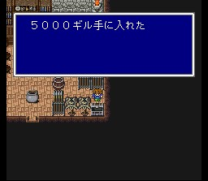
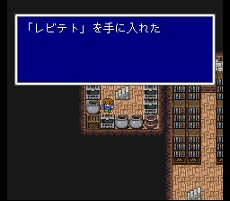

사게이트성
사게이트성에 들어가면 제자가 함대를 이끌고 엑스데스성 앞에 나가 있다고 합니다. 아직은 함대가 나타나지 않으니 기드의 동굴에 먼저 들를 필요가 있습니다.
이 성에서도 할 게 많습니다. 일단 돈을 챙기시고, 시공마법 레비테트를 얻으려면 조금 과정이 복잡합니다. 성을 돌아다니다 보면 도서관이 나오는데, 할머니의 부탁에 따라 책을 맞는 책장에 모두 정리해 주세요. 그러면 레비테트를 얻는 상자로 가는 통로가 뚫립니다. 그래도 헷갈립니다만 잘 찾아 보세요.
도구상: 하이포션, 포션, 피닉스의 꼬리깃, 금바늘, 여인의 키스, 요술방망이,
안약, 해독제, 에텔, 성수, 코테이지, 거인의 약, 힘의 약, 스피드드링크, 프로테스드링크,
영웅의 약
무기상: 그레이트스워드, 헤비랜스, 비젠오사후네, 포이즌액스
방어구상:
골드실드, 골드헬름, 네지리하치마키, 삼각모자, 골드아머, 힘의 옷, 대지의 옷,
건틀렛
마법상: 백, 흑, 시공마법 레벨 4
제자의 일기장을 조사하면 속도의 노래를 얻을 수 있습니다.